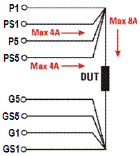

Multisite DPS (MS-DPS)
The Multisite DPS (MS-DPS) is useful in applications where 1.5 A per pin are needed or where negative voltages are required.
| Supported V93000 systems : Smart Scale (SmarTest 7), Pin Scale, HSM |
The maximum DUT board capacitance for the MS-DPS is 470 µF(See DPS Load Capacitors and DPS Performance Ranges for more information). For the GP-DPS, it varies from 4 µF to 3000 µF, depending on the application. If a DUT board will be shared between the GP-DPS and MS-DPS, you need to consider this difference and your specific application needs, then determine the appropriate load capacitance. If a DUT board designed for the GP-DPS is used for the MS-DPS, you need to validate that the currently-mounted load capacitance will not impact your tests.
The general layout for the Multisite DPS is similar to the General Purpose DPS. The table in Multisite DPS (MS-DPS) pogo pin assignments shows the pin information for the MS-DPS.
In the 8-channel mode, the MS-DPS provides 8 independent channels with up to 4 A each; the total current per card is 16 A.
In the 4-channel mode, 2 channels are internally ganged (channel n and n+4, n = 1 to 4)
Guard lines are provided for channel 1 to 4 only.

Functional changes
- Introduced before SmarTest 6.3.2